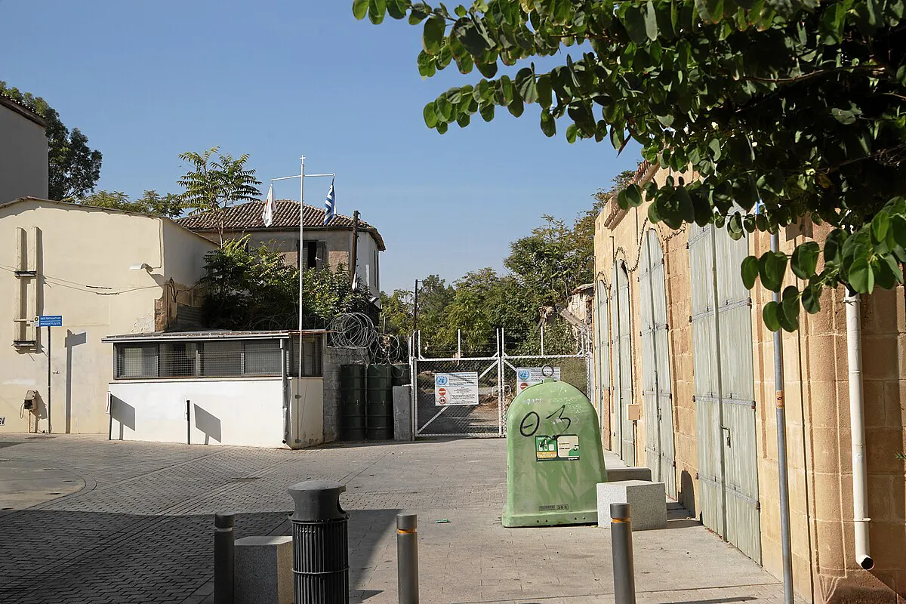
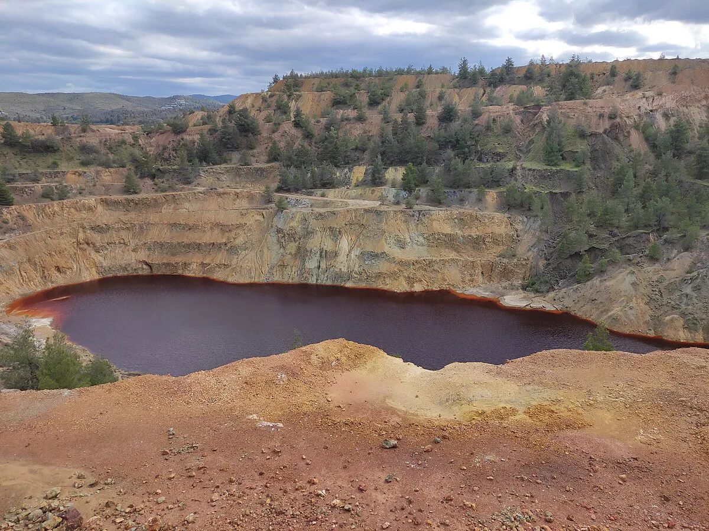
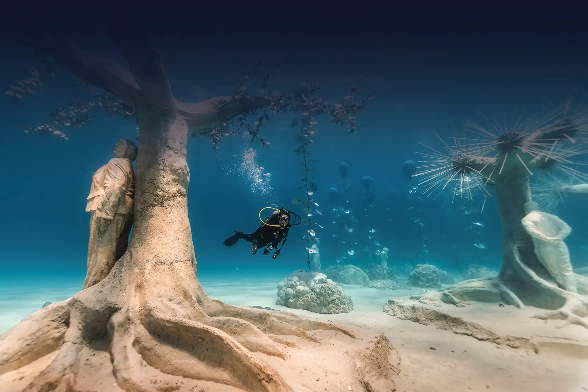
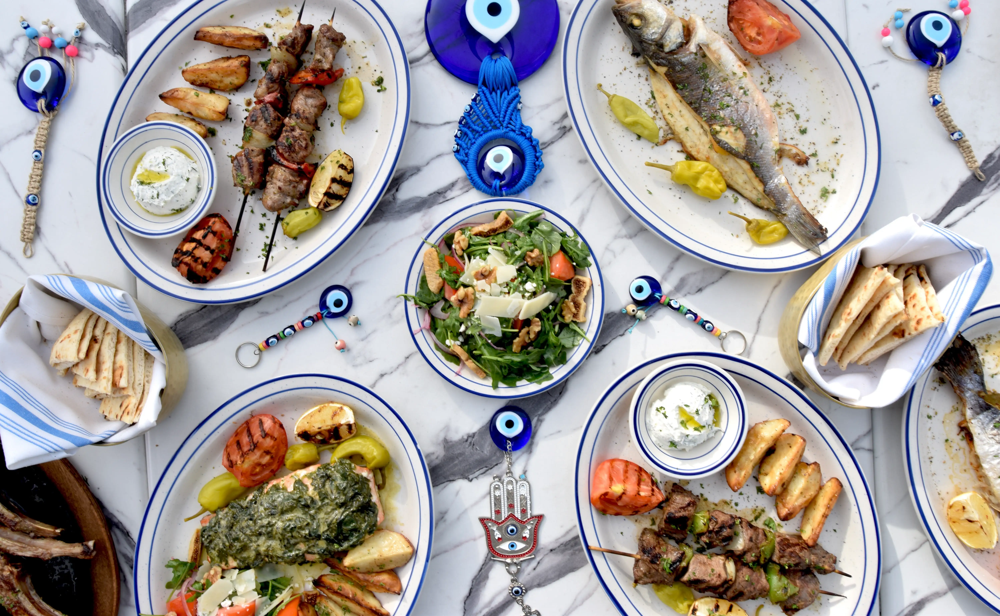

Cyprus is one of the oldest continuously inhabited places on Earth, a piece of ocean floor pushed two kilometers into the air, and the last divided capital in the world, all on an island you can cross in two hours. Everything below is pinned on the map at the end.
- Drive
- On the left, UK-style. Rent a car; taxis and intercity buses exist, but the island opens up by road.
- When
- April to June and September to November. August is an oven. Flamingos arrive in November; turtles nest June to September.
- The divide
- Split since 1974. Crossing for a day is routine with a passport. Arrive on the island through the south; landing at Ercan airport counts as illegal entry into the Republic. Entries marked north are beyond the line; I have not been myself, so those come from research rather than memory.
Ruins & history
Nine thousand years of it. These are the ones worth the drive.
-
KourionLimassolA Greco-Roman theatre hanging on a sea cliff, mosaics still in their floors, and a house flattened mid-breakfast by the great earthquake of AD 365. Go late afternoon; no shade.
-
AmathusLimassolAn entire ancient kingdom, usually empty. Its four-ton stone jar is in the Louvre; the silence stayed here.
- Burial chambers carved into rock like underground houses, and Roman villa floors seventeen centuries old. One morning, together.
-
KhirokitiaLarnacaRound stone houses from 7,000 BC, already ancient ruins before Stonehenge was an idea. Step inside the reconstructions.
-
Cyprus MuseumNicosiaNine millennia in one hour, including two thousand terracotta figures found standing in a circle. Moving to a new building around 2027; see the 1908 one while it exists.
-
Leventis MuseumNicosiaFree, and the best-told story on the island. Do it before you walk the Green Line.
-
Petra tou RomiouPaphos roadAphrodite’s birthplace, says the legend. A fine rock and a great story, but a stop, not a destination: pull over, take the photo, keep driving.
-
Ancient SalamisNorthThe gymnasium colonnade against the sea. Unsigned and overgrown, and the most evocative ruin on the island precisely because nobody manages your experience.
-
St Hilarion CastleNorthThe best view in Cyprus, from a Crusader castle above Kyrenia. Real climb; hours obey the army, not the website. Pair with Bellapais Abbey and the 2,300-year-old shipwreck in Kyrenia castle.
-
Saint Lazarus & AngeloktistiLarnacaA 9th-century church over the tomb of the biblical Lazarus (the crypt is the point), and in Kiti a 6th-century mosaic whose only peer is at Mount Sinai.
- Churches disguised as barns, wall-to-wall Byzantine murals inside; ten are UNESCO listed. Agios Nikolaos tis Stegis is walkable from old Kakopetria.
The divided island

In 1963 a British general drew a line across Nicosia with a green pencil. It is still there. Don’t photograph checkpoints or anyone in uniform.
-
The Green Line walkNicosiaFollow the dead-end streets along the barricades, cross at Ledra Street (passport, minutes), and come back past the Home for Cooperation, a café physically inside the buffer zone.
-
Büyük Han & Selimiye MosqueNorth NicosiaA restored Ottoman caravanserai full of workshops and coffee, and the island’s oldest great Gothic building, wearing minarets. Both a short walk from the Ledra crossing.
- Venetian walls that survived one of history’s great sieges, and a French Gothic cathedral, coronation church of the Kings of Jerusalem, a mosque since 1571. Morning, before Varosha.
-
VaroshaNorthThe resort suburb sealed since 1974, partly walkable since 2020. It is also tens of thousands of people’s confiscated homes; go quietly, on foot, off season. The contrast with the living old town next door says more than any museum.
Rocks & mines

The Troodos is a slab of 92-million-year-old ocean floor, and the word “copper” comes from this island. Aristotelis will not apologise for this section.
- In an old school inside a rehabilitated asbestos mine. Forty-five minutes that upgrade every mountain drive after it. See it first.
-
Red Lake, MitseroNicosiaAn abandoned copper pit filled with blood-red water, thirty minutes from the capital. Toxic; look, don’t touch. The pits at Mathiatis nearby glow yellow and orange.
-
Tzelefos bridgePaphos ForestA 16th-century humpback on the Venetian camel road that carried the copper to the sea. A forest detour that feels found, not visited.
Trails
October through May. Early starts, real shoes, carry water.
-
Adonis & Aphrodite loopAkamasThe definitive Cyprus walk: nine and a half kilometers to a ridge above the Blue Lagoon coast. Do Adonis first so the descent hands you the sea the whole way down.
-
Teisia tis MadarisTroodosThree and a half kilometers around the dyke walls of the Madari ridge; more views per kilometer than hikes ten times its length. Often above the clouds on autumn mornings.
-
Artemis trailTroodosCircles the summit cone of Olympus at 1,850 meters, nearly flat, whole island below. Bring a layer even in October.
-
Avakas GorgeAkamasA limestone slot canyon three meters wide under thirty-meter walls, boulder wedged overhead.
-
Caledonia FallsTroodosLush, shaded, genuinely lovely, and the busiest trail on the island. Weekday morning; trout at Psilo Dendro after.
The wild
Comebacks and near misses. Seasons matter here.
-
Lara BayAkamasThe turtle beach: nesting June and July, hatchlings through September. Unpaved road on purpose. Bring everything, leave nothing, no lights after dark in season.
-
Kensington CliffsLimassolThe griffon vulture colony, rebuilt with birds flown in from Spain. Go mid-morning when the thermals build. Free, and nobody is there.
-
The salt lakesLarnaca · AkrotiriFlamingos by the thousand, November to March. In summer, a blinding salt mirror. The Akrotiri peninsula is the island’s richest birding year-round.
-
Stavros tis PsokasPaphos ForestThe near-guaranteed mouflon sighting, deep in the forest near Cedar Valley. Closed as a precaution in March 2026; check it has reopened before the long drive.
The sea

One of the longest dive seasons in the Mediterranean, March to November. The water holds 24 degrees deep into autumn.
-
The ZenobiaLarnacaA 172-meter ferry that sank in 1980 with a hundred trucks aboard; a world top-ten wreck dive, minutes offshore. The cafeteria’s coffee machine is still attached to the bar.
-
MUSANAyia NapaAn underwater sculpture museum you snorkel or dive through.
-
Cape Greco by kayakAyia NapaThree hours along the cliffs to the sea caves, swimming stops included. Runs until the end of October; book the morning glass.
-
Nissi · Fig Tree Bay · KonnosAyia Napa · ProtarasThe postcard beaches, honestly earned. Konnos is the quieter of the three.
-
Blue LagoonAkamasExactly as beautiful as every photo you will find on Google.
Food

Leave without a proper meze, fresh halloumi, kleftiko, and loukoumades, and Aristotelis takes it personally.
- Halloumi made in a vat in front of you, bread from the stone oven, lunch at their family table. The realest food experience on the island. Book ahead; cancel your dinner plans.
- Fish in the village it landed in. Order the calamari at Hercules; Xefoto’s own boats catch what it serves.
-
The Nicosia old-town rowNicosiaΜπéμπα for modern Cypriot cooking, Topika for meze, Rokoko and γρανáζι for the bar end of the evening. Loukoumades Kyrillis since 1965; the OXI market on the walls, Wednesday and Saturday before ten.
-
To souvlaki tou SoukriParalimniThe souvlaki worth a detour. There is a second one in Protaras.
-
Adamos, LefkaraLarnaca hillsThe answer locals give when you ask in the village.
- Clay-oven kleftiko that justifies the island’s most coached village, and the local answer in Kakopetria. The famous Mill serves real trout at famous-Mill prices.
Wine
Commandaria is plausibly the oldest wine still made under its own name; the Knights ran it from Kolossi castle. The villages making it are an hour from the coast.
-
ZambartasKrasochoriaThe best tasting on the island, busy reviving the indigenous grapes: Xynisteri, Maratheftiko, Yiannoudi.
-
Vlassides, KilaniKrasochoriaThe reference Shiraz in a building worth the trip by itself. Kilani is the village to eat in, not Omodos.
-
KyperoundaTroodosXynisteri grown at 1,400 meters, about as high as European vineyards go, directly below the Madari ridge walk.
-
Tsiakkas, PelendriTroodosBridges the dry wines and Commandaria from a tasting terrace over the valley.
-
Revecca, Agios MamasCommandariaA tiny organic family producer pouring the real thing in the old family house. Skip the supermarket bottles.
Slowing down
Cyprus does luxury best when it is woven into a village. (We would skip the Parklane; the Library Hotel in Kalavasos has faded.)
-
Casale PanayiotisTroodosA century of stone houses restored across a living valley village, with a spa people rank among the best treatments of their lives. Steep lanes; pack accordingly.
-
Apokryfo, LofouKrasochoriaThe boutique version, in an unspoilt wine village fifteen minutes from the wineries.
-
AnassaAkamasThe one big resort whose service earns the price. Eat half your dinners at the Latchi fish quay five minutes away and you have fixed its one weakness.
-
AmaraLimassolThe modern option guests rate above its flashier neighbours; Matsuhisa and Locatelli are destination meals on their own.
-
Hamam OmeryeNicosiaA bathhouse, on and off, since the 14th century. Book a treatment; if the call to prayer reaches you under the dome, that is the moment you will remember.
The map
Everything above, pinned. Tap a point for the note and directions.
Drag to pan, ctrl + scroll to zoom, tap a point.